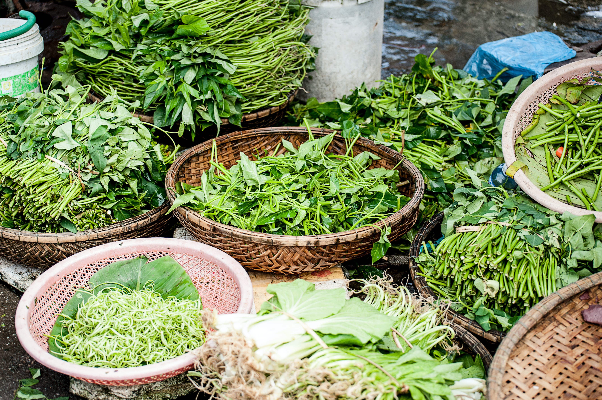
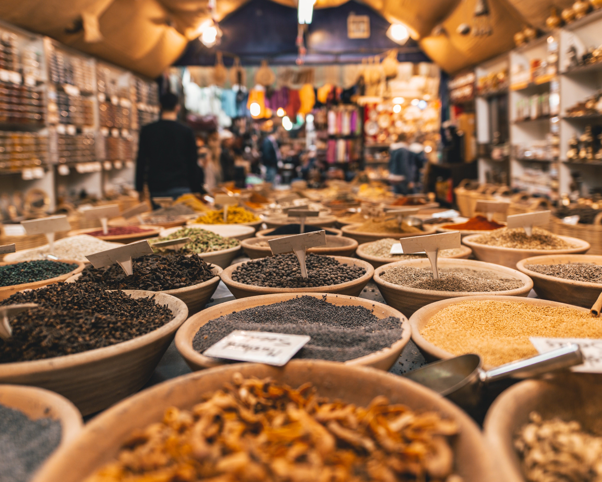
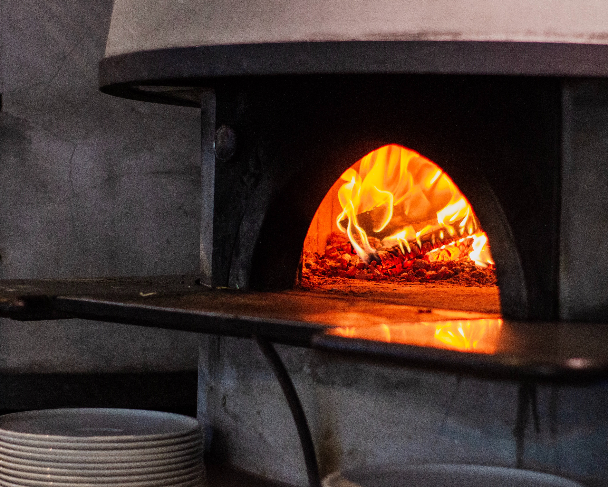
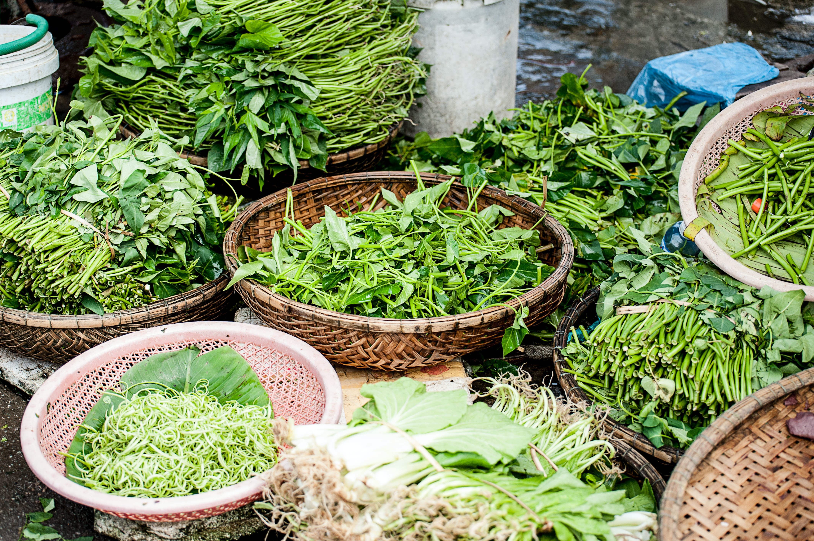
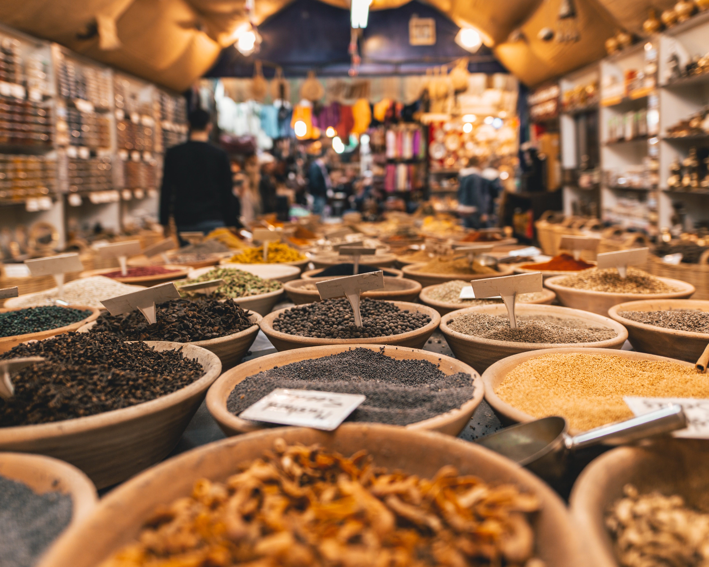
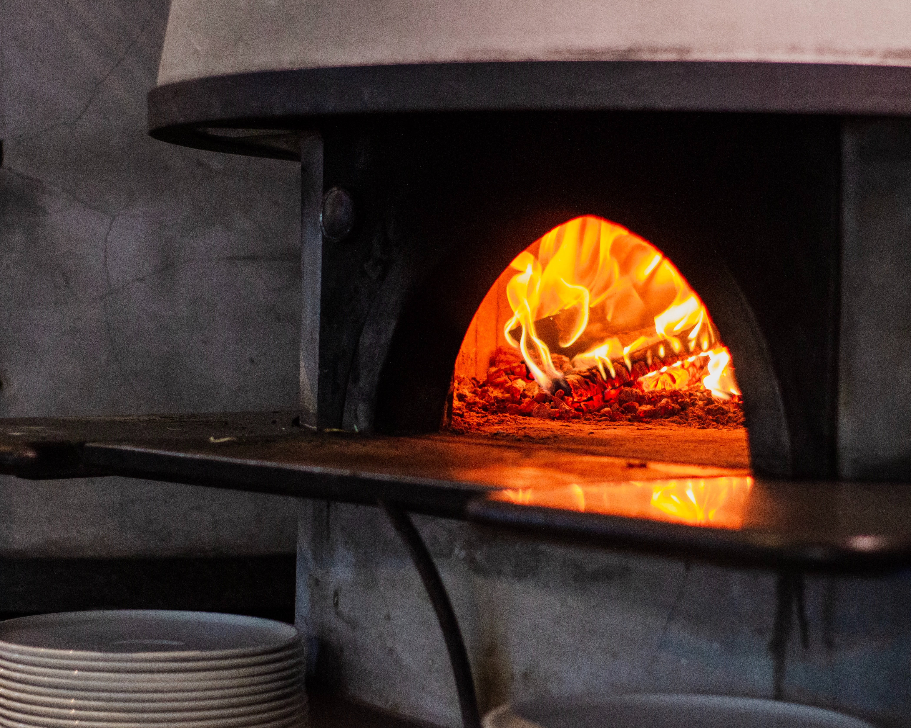

What is Traditional Cuisine?
Traditional cuisine is the type of food and cooking methods that have been passed down through generations and are seen as a part of a cultural heritage. It is often based on locally grown ingredients and traditional recipes that have been in the family for years. Traditional cuisine often has a close connection to the land, climate, and culture of the region in which it originated.
In many parts of the world, traditional cuisine is still seen as an important part of the daily lives of local people. Traditional dishes are often cooked using methods that have been used for centuries, such as baking, roasting, and steaming. Many traditional dishes feature spices and herbs that give them their unique flavor and aroma.
Traditional cuisine often has a great emphasis on seasonality, with dishes being made from ingredients that are in season only at certain times of the year. This helps to ensure that the dishes are made with the freshest ingredients, while also ensuring that the flavor is consistent throughout the year.
Traditional cuisine is often very healthy, as it often uses locally grown produce and ingredients that are low in fat and high in fiber. This type of cuisine is also usually much more affordable than modern food that has been imported from other countries. Traditional cuisine is often prepared in a way that